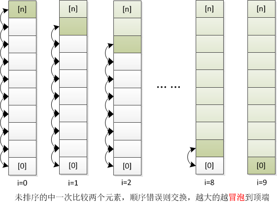
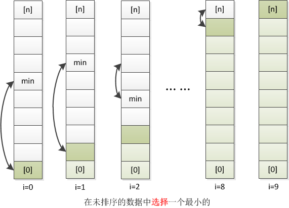
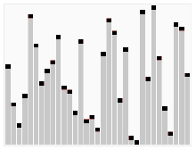
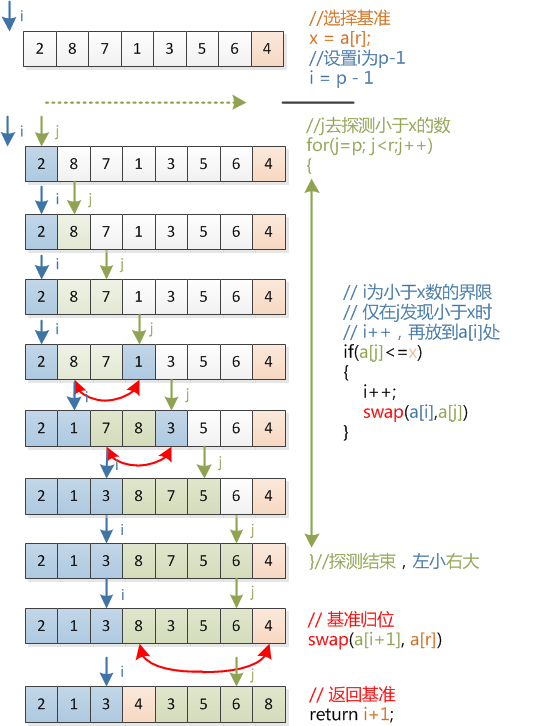

1. 排序算法汇总
1. 概述
| 算法名称 | 复杂度 | 实现关键 |
|---|---|---|
| 冒泡排序 | O(n^2) | （无序区，有序区）。从无序区通过交换找出最大元素放到有序区前端。 |
| 选择排序 | O(n^2) | （有序区，无序区）。在无序区里选择一个最小的元素跟在有序区的后面。 |
| 插入排序 | O(n^2) | （有序区，无序区）。把无序区的第一个元素插入到有序区的合适的位置。 |
| 希尔排序 | nlog^2(n) | 每一轮按照事先决定的间隔进行插入排序，间隔会依次缩小，最后一次一定要是1(插入)。 |
| 快速排序 | nlog(n) | （小数，枢纽元，大数）。 |
| 堆排序 | nlog(n) | |
| 桶排序 | O(n) | 将值为i的元素放入i号桶，最后依次把桶里的元素倒出来。 |
不稳定的排序：
稳定性一个形象的比喻，本来有两个并列第三，一排序把原来并列的顺序给变了。
比如：选择排序、快速排序、堆排序、希尔排序；
参考链接
2. 冒泡排序

每次都把未排序的第一个作为起始点，然后逐渐冒泡上升，之后未排序区越来越少，最终排序完成

|
|
3. 选择排序

每一趟从待排序的数据元素中选出最小（或最大）的一个元素，顺序放在已排好序的数列的最后，直到全部待排序的数据元素排完。

|
|
4. 插入排序

每次排序从未排序区取一个“牌”，然后往前插入(包括了两步：大的往后移，把牌放到合适位置)。
|
|
另外还有种思路，把数据后移的过程换成交换的过程
|
|
5. 希尔排序
对插入排序再加一个步长的循环就是希尔排序了，例如1[ 13 14 94 33 82 25 59 94 65 23 45 27 73 25 39 10 ]
按照5步长排序，则相当于按列先进行排序(实际是通过下标实现的)123413 14 94 33 8225 59 94 65 2345 27 73 25 3910
排序后结果为123410 14 73 25 2313 27 94 33 3925 59 94 65 8245
多次循环后，只需要最终步长为1即可。
|
|
6. 快速排序

每次迭代都选出一个基准，左边放小的，右边放大的，最终迭代完成。

|
|